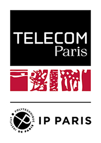

Télécom Paris
Logo History and Evolution
← Back to Universities
Edit Entry
University Information
Location
Palaiseau, France
Founded
1876
Parent Institutions
Institut Polytechnique de Paris
Year: 2019
View Parent Institution →
Logo History

2019
Source: Telecom Paris Logotypes